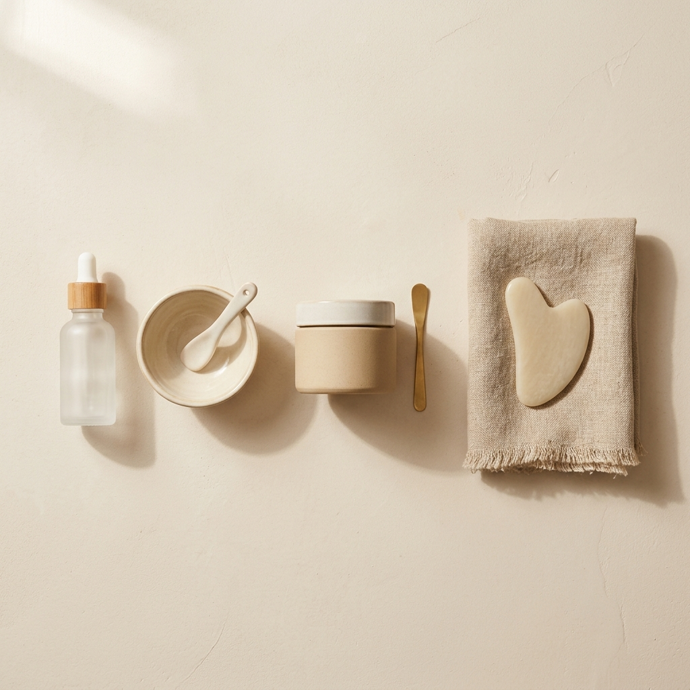
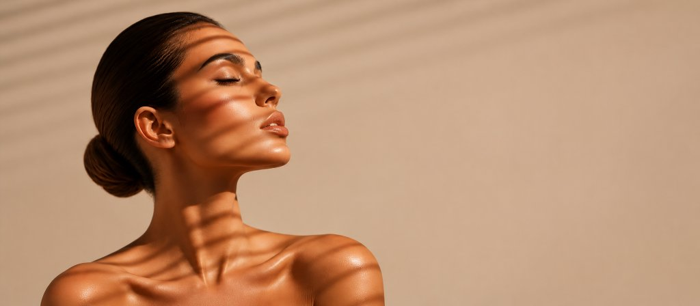

1 · Avaliação e objetivos
Conversamos sobre o que você quer, o que é indicado para o seu caso e o que não é. Nenhum tratamento é vendido antes dessa etapa.
Avaliação personalizada para rosto, corpo ou depilação. Você sai sabendo o que cuidar, em que ordem e quanto tempo leva, antes de decidir qualquer sessão.
Agendar minha avaliaçãoVocê já fez um tratamento, gostou,
e depois não soube o que vinha em seguida.
Ou começou um pacote longo sem entender
o porquê e desistiu no meio. Ou já fez
em outro lugar e saiu sem saber o que esperar.
Não é falta de disciplina. Faltou um plano
que explicasse cada etapa, com clareza,
antes de você se comprometer.
Conversamos sobre o que você quer, o que é indicado para o seu caso e o que não é. Nenhum tratamento é vendido antes dessa etapa.

Sessões combinadas, com o tempo de cada uma e o que acontece em cada fase. Você sabe o que vem depois.
Ajustes ao longo do caminho e manutenção mensal, para o cuidado continuar sem surpresa.
Você decide com a informação completa, não por impulso nem pela promoção do mês.
Equipamentos regularizados, higienização em cada atendimento e procedimentos de saúde realizados por profissional habilitado, com registro.
“Adorei o atendimento! A profissional ouviu minhas preocupações e explicou cada etapa do tratamento. Me senti muito segura desde a primeira avaliação.”
“Já tinha feito tratamentos em outras clínicas, mas nunca recebi uma orientação tão personalizada. Aqui, finalmente entendi o que minha pele precisava.”
“O que mais gostei foi a transparência. Em nenhum momento me senti pressionada a contratar um procedimento. Tudo foi explicado com muita atenção.”
“Além do ambiente ser maravilhoso, o cuidado das profissionais faz toda a diferença. Hoje tenho uma rotina de cuidados que realmente faz sentido para mim.”
“Estava insegura por nunca ter feito tratamentos estéticos. Fui recebida com tanto carinho e paciência que todas as minhas preocupações passaram.”
“O acompanhamento é um grande diferencial. Saber o que esperar de cada etapa do tratamento me deixou muito mais tranquila e confiante.”
Você conversa com a profissional antes e entende o que vai sentir. Se algo não for confortável para você, a gente ajusta o protocolo.
O valor depende do seu caso e é apresentado na avaliação, com as etapas e o tempo de cada uma.
Essa é justamente a pergunta da avaliação.

Você recebe a confirmação pelo WhatsApp e um lembrete antes do horário.
Agendar minha avaliação